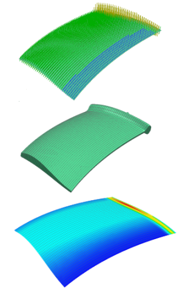

要查看和可视化验证模型中2D 单元厚度值的分布，可以创建不同类型的显示：
要在模型中创建临时的2D 单元厚度值“刺猬”类型显示，可以使用仿真导航器中的厚度信息命令。软件将使用颜色和直线相关长度来表示网格中厚度值的差异，您可以查询在单个节点和单元处指派的厚度值
要在图形窗口中显示单元与它们的指派厚度值，使用网格显示对话框中的显示2D 单元厚度与偏置选项，在这种类型的显示中，壳单元看起来像一个实体单元
要把壳单元厚度的轮廓图作为一个标准的后处理视图，使用仿真导航器中的绘制厚度云图命令。
|

|